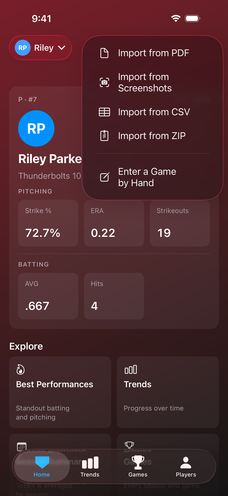
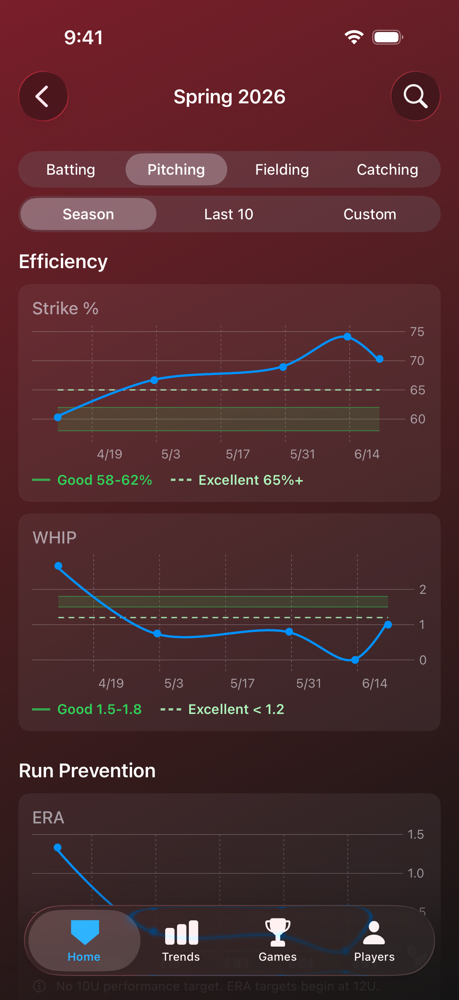
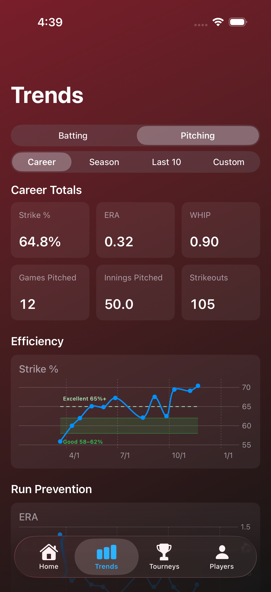

Import without administrator access
You don't need to manage the team's GameChanger account to keep your player's records. Capture screenshots of the box score directly from the GameChanger app, and Full Count reads them, checks every number, and builds the game. Any data you can see, you can keep. Rows clipped at the edge of the screen are recovered rather than discarded. For an even easier import, use the GameChanger box score PDF export.

Every number is double-checked
When Full Count reads a screenshot, it doesn't ask you to trust the reading. Every number is cross-checked against the box score's own team totals, so a misread digit is caught before anything is saved. The review names the discrepancy exactly, hits one short of the printed total, for instance, and points to the rows worth checking so you can fix the cell in place. In the rare case where the box score genuinely prints numbers that don't add up, you can accept it as printed instead.

Targets matched to the age division
The tiers come from coaching consensus for each age division and sport, with separate softball and baseball tables from 8U through 18U. Full Count plots each stat game by game, and on key charts it draws the division's targets alongside the data: a green band marks Good, and a dashed line marks Excellent.
Each season keeps the targets for the division it was played in, so earlier seasons remain measured against the level your player was competing at.

Season, tournament, and career views
A single import feeds every view: a season dashboard, a game-by-game log, tournaments grouped automatically by date, and career charts spanning every team and season. Game lists lead with the final score and the win or loss, and Best Performances collects standout games, batting and pitching alike, in one place.

Family sharing through iCloud
Share a player once and every phone stays current. Imports appear on each family member's device automatically, with a notification when someone adds a game. Access is granted per person: View Only for relatives who follow along, or View and Edit for a second parent who imports games. Full Count requires no account and relies on no third-party services; your data is stored on your device and in your own iCloud.